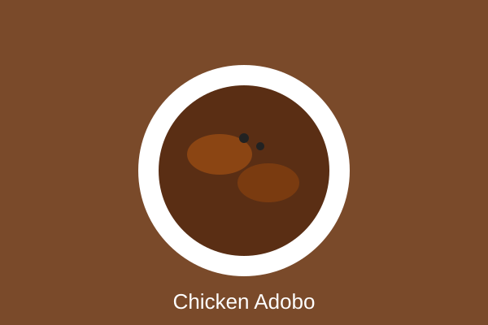

Chicken Adobo

Description
Chicken adobo is often called the unofficial national dish of the Philippines.
Chicken is slowly braised in soy sauce, vinegar, garlic, bay leaves and black
peppercorns until tender, giving it a savory, slightly tangy flavor. Serve it
with plenty of steamed rice.
Ingredients
- 1 kg chicken thighs and drumsticks
- 1/2 cup soy sauce
- 1/3 cup cane or white vinegar
- 1 head garlic, crushed
- 3 bay leaves
- 1 tsp whole black peppercorns
- 1 cup water
- 1 tbsp brown sugar (optional)
- 2 tbsp cooking oil
Steps
- Marinate the chicken in soy sauce and half of the garlic for at least 30 minutes.
- Heat oil in a pot and sauté the remaining garlic until golden.
- Add the chicken (keep the marinade) and brown it on all sides.
- Pour in the marinade, water, bay leaves and peppercorns. Bring to a boil.
- Add the vinegar and let it boil for 2 minutes without stirring.
- Lower the heat, cover and simmer for 30–35 minutes until the chicken is tender.
- Uncover, add sugar if using, and reduce the sauce to your liking. Serve with rice.
Back to all recipes